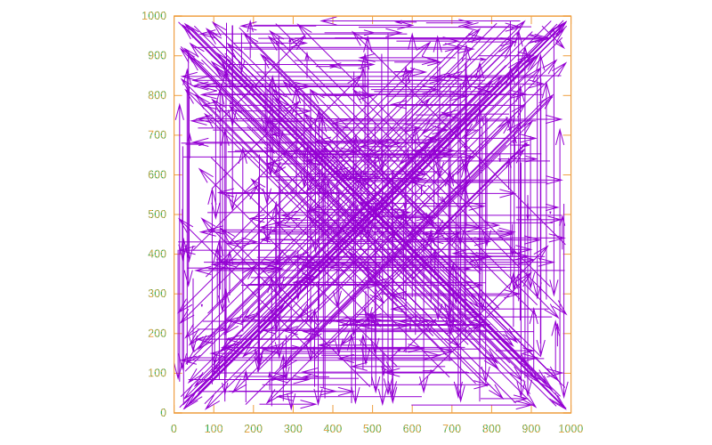

Advent of Code 2021
This year I will publish my solutions for Advent of Code in Haskell, using Entangled to do Literate Programming.
Advent of Code
Advent of Code is an anual coding challenge keeping nerds off the street for the entire merry month of decemeber. This is officially the best way to learn a new programming language or improve on your existing skills.
Spoiler warning
If you’re still trying to solve AOC2021, this site contains spoilers.
Entangled
Entangled is a tool for Literate Programming. My challenge for this years’ Advent of Code is to create a set of beautifull solutions, that are completely documented in a literate form. The idea is that the code you see here is the complete solution to a problem. Think of Entangled as a content-management system for code blocks in your Markdown documents. The code blocks are assembled into compilable code, while changes are also tracked back to your markdown files. This means you can still debug and work with your favourite IDE.
Instructions
To run this code, I recommend installing Haskell using the GHCUp installer. Run all solutions:
cabal run x2021 -- -aGeneric remarks
All solutions use the RIO library to replace the standard Prelude. This saves a long list of standard imports and is much better suited to modern Haskell practices. Most of the input parsing is done through Megaparsec, for which I have a submodule that contains some common types and functions, see the boilerplate section.
License
This code is licensed under the Apache v2 license, see LICENSE file in this repository.
Day 1: Sonar Sweep
It seems we are going on a deep dive this year! We are given the height data of a sonar sweep of the bottom of the sea.
file:app/Day01.hs
module Day01 where
import RIO
import qualified RIO.Text as Text
readInput :: MonadIO m => m [Int]
readInput = do
text <- Text.lines <$> readFileUtf8 "data/day01.txt"
return $ mapMaybe (readMaybe . Text.unpack) text
<<solution-day-1>>
<<run-solutions>>The question is: how often do we find this sequence ascending? We may solve this by computing the difference between each consecutive element in the input list. Then we need to know the number of possitive numbers in the difference list:
«solution-day-1»
solutionA :: [Int] -> Int
solutionA = length . filter (> 0) . diff
where diff (a1:a2:as) = a2 - a1 : diff (a2:as)
diff _ = []In the second part we need to do a sliding sum over the list of input numbers, reducing the problem to that of part A:
«solution-day-1»
solutionB :: [Int] -> Int
solutionB = solutionA . slidingSum
where slidingSum (a1:a2:a3:as) = a1 + a2 + a3 : slidingSum (a2:a3:as)
slidingSum _ = []In hindsight, a more efficient solution would be:
solutionB = length . filter (> 0) . diff3
where diff3 (a1:a2:a3:a4:as) = a4 - a1 : diff3 (a2:a3:a4:as)
diff3 _ = []The middle terms in the finite difference drop out.
Day 2: Dive!
We are given our first mini instruction set! We need to steer the submarine using an instruction set forward, down or up with a number attached. We get to do our first parsing of this year (yay!).
file:app/Day02.hs
module Day02 where
import RIO
import RIO.List (foldl)
import qualified RIO.Text as Text
import Parsing (readInputParsing, Parser, lexeme, string, integer, sepEndBy1, eol)
<<solution-day-2>>
<<run-solutions>>We start by defining a datatype and the associated parser:
«solution-day-2»
data Instruction
= GoForward Int
| GoUp Int
| GoDown Int
deriving (Show)
instructions :: Parser [Instruction]
instructions = sepEndBy1 (lexeme direction <*> integer) eol
where direction = (string "forward" $> GoForward)
<|> (string "up" $> GoUp)
<|> (string "down" $> GoDown)
readInput :: (MonadIO m, MonadReader env m, HasLogFunc env) => m [Instruction]
readInput = readInputParsing "data/day02.txt" instructionsIn the first part, we are asked to do some Turtle movement. We can reduce the set of instructions in a foldl if we define a function that updates the position for each move:
«solution-day-2»
type Pos = (Int, Int)
moveA :: Pos -> Instruction -> Pos
moveA (x, y) (GoForward dx) = (x + dx, y)
moveA (x, y) (GoUp dy) = (x, y - dy)
moveA (x, y) (GoDown dy) = (x, y + dy)
solutionA :: [Instruction] -> Int
solutionA inst = x * y
where (x, y) = foldl moveA (0, 0) instIn the second part, the interpretation of the instructions changes slightly, but the only thing we have to change is the moveA function and the corresponding accumulator data type (I’m using NamedFieldPuns and RecordWildCards, which I prefer over lenses in these simple cases):
«solution-day-2»
data Navigation = Navigation
{ navDepth :: Int
, navAim :: Int
, navPos :: Int
} deriving (Show)
moveB :: Navigation -> Instruction -> Navigation
moveB n@Navigation{..} (GoForward x) = n{ navPos = navPos + x
, navDepth = navDepth + navAim * x }
moveB n@Navigation{..} (GoUp x) = n{ navAim = navAim - x }
moveB n@Navigation{..} (GoDown x) = n{ navAim = navAim + x }
solutionB :: [Instruction] -> Int
solutionB inst = navPos * navDepth
where Navigation{..} = foldl moveB (Navigation 0 0 0) instDay 3: Binary Diagnostic
file:app/Day03.hs
module Day03 where
import RIO
import RIO.List.Partial (foldl1)
import Parsing (Parser, sepEndBy1, char, eol, readInputParsing)
import qualified Data.Vector as Vector
import Data.Vector (Vector)
<<solution-day-3>>
<<run-solutions>>Because of part 2 of this puzzle, I chose to put the bit sequence in a Vector.
«solution-day-3»
type Bits = Vector Int
bitSequence :: Parser [Bits]
bitSequence = sepEndBy1 bits eol
where bits :: Parser Bits
bits = Vector.fromList
<$> some ( (char '0' $> 0)
<|> (char '1' $> 1))
readInput :: (HasLogFunc env) => RIO env [Bits]
readInput = readInputParsing "data/day03.txt" bitSequenceWe need to compute the most common digit for each bit position. I solve this by rounding of the mean bit value.
«solution-day-3»
fromBinary :: Bits -> Int
fromBinary = go 0 . Vector.toList
where go n (b:bs) = go (2*n + b) bs
go n [] = n
invertBinary :: Bits -> Bits
invertBinary = Vector.map (1 -)
mostCommon :: [Bits] -> Bits
mostCommon b = Vector.map ((`div` length b) . (* 2))
$ foldl1 (Vector.zipWith (+)) b
leastCommon :: [Bits] -> Bits
leastCommon = invertBinary . mostCommon
solutionA :: [Bits] -> Int
solutionA input = gammaRate * epsilonRate
where gammaRate = fromBinary mc
epsilonRate = fromBinary $ invertBinary mc
mc = mostCommon inputIn the second part we need to filter down on a single bit in each iteration. The most or least common bit value needs to be computed every time, as it changes when bit sequences are filtered out.
«solution-day-3»
findRating :: ([Bits] -> Bits) -> Int -> [Bits] -> Bits
findRating _ _ [b] = b
findRating f idx bits =
findRating f (idx + 1)
$ filter (\b -> b Vector.!? idx == mc Vector.!? idx) bits
where mc = f bits
oxygenGeneratorRating :: [Bits] -> Int
oxygenGeneratorRating = fromBinary . findRating mostCommon 0
co2ScrubberRating :: [Bits] -> Int
co2ScrubberRating = fromBinary . findRating leastCommon 0
solutionB :: [Bits] -> Int
solutionB bits = oxygenGeneratorRating bits * co2ScrubberRating bitsDay 4: Giant Squid
We’re playing Bingo with a giant squid. This is why I love advent of Code!
Doing contrived array arithmetic is not seen as the strong suit of Haskell. Solving this in Python with NumPy would seem so much easier. I will use the nice Massiv library, that implements multi-dimensional arrays, fancy indexing, stencil operations etc.
file:app/Day04.hs
module Day04 where
import RIO hiding (try)
import RIO.List (partition, headMaybe, lastMaybe)
import Parsing ( Parser, sepEndBy1, sepBy1, char, hspace, eol
, integer, lexeme, readInputParsing
, failOnException )
import qualified Data.Massiv.Array as A
<<data-types-day-4>>
<<parser-day-4>>
<<solution-day-4>>
<<run-solutions>>We need to have integers that we can mark when we play Bingo. I’ll make a generic Mark container, that contains an extra boolean flag.
«data-types-day-4»
data Mark a = Mark
{ marked :: Bool
, markValue :: a
}
markEq :: (Eq a) => a -> Mark a -> Mark a
markEq v Mark{ .. }
| v == markValue = Mark True markValue
| otherwise = Mark marked markValue
unmarked :: Mark a -> Bool
unmarked = not . marked
type Board = A.Array A.B A.Ix2 (Mark Int)
data Bingo = Bingo
{ draws :: [Int]
, boards :: [Board]
}Next, we need to parse the input data.
«parser-day-4»
drawsP :: Parser [Int]
drawsP = sepBy1 integer (lexeme $ char ',')
boardP :: Parser Board
boardP = sepEndBy1 row eol >>= toBoard
where whitespace = lexeme (return ())
row = whitespace >> some (Mark False <$> integer)
toBoard = failOnException . A.fromListsM A.Seq
bingoP :: Parser Bingo
bingoP = Bingo <$> drawsP <* eol <* eol <*> sepEndBy1 boardP eol
readInput :: (HasLogFunc env) => RIO env Bingo
readInput = readInputParsing "data/day04.txt" bingoPWe win at Bingo if a row of column on a board is fully marked. The Massiv library provides the nice functions outerSlices and innerSlices, allowing us to traverse all rows and columns:
«solution-day-4»
win :: Board -> Bool
win b = rows || columns
where rows = any (all marked) (A.outerSlices b)
columns = any (all marked) (A.innerSlices b)Each time a number is called we mark all matching values:
«solution-day-4»
markBoard :: Int -> Board -> Board
markBoard n b = markEq n <$> bFor part A we need to figure out, the first board to win and the last number that was called. I won’t pretend this is the first implementation I came up with. After also solving part B, it turns out this is the most elegant and generic way to do it. The function winners generates a list of (Int, Board) pairs, giving in order each board winning and on what number:
«solution-day-4»
winSeq :: [Int] -> [Board] -> [(Int, Board)]
winSeq [] _ = []
winSeq _ [] = []
winSeq (d:draws) boards = map (d,) winners <> winSeq draws losers
where (winners, losers) = partition win $ markBoard d <$> boardsNow, to get the first winner, we can just get the head of the list of all winners:
«solution-day-4»
score :: (Int, Board) -> Int
score (n, b) = n * sum (unmarkedValues $ A.toList b)
where unmarkedValues = map markValue . filter unmarked
solutionA :: Bingo -> Maybe Int
solutionA Bingo{..} = score <$> headMaybe (winSeq draws boards)For part B we need to know the last board to win, which is now a trivial ajustment:
«solution-day-4»
solutionB :: Bingo -> Maybe Int
solutionB Bingo{..} = score <$> lastMaybe (winSeq draws boards)Day 5: Hydrothermal Venture
We need to plot a map of hydrothermal vents on a grid. We are given lists of coordinates in the form x1,y1 -> x2,y2. Since we are plotting on 2D grids again, I reach for my friend Massiv. Today, we’ll see how to program in Haskell like its Fortran 77.
file:app/Day05.hs
module Day05 where
import RIO hiding (try)
import RIO.ByteString (putStr)
import qualified RIO.Text as Text
import RIO.List.Partial (foldl1)
import RIO.List (partition, headMaybe, lastMaybe)
import Parsing ( Parser, sepEndBy1, sepBy1, char, hspace, eol
, integer, lexeme, readInputParsing
, string )
import qualified Data.Massiv.Array as A
import qualified Data.Massiv.Array.Mutable as MA
<<data-types-day-5>>
<<parser-day-5>>
<<solution-day-5>>
<<extra-day-5>>
<<run-solutions>>
I like to have position variables that I can treat like applicatives.
«data-types-day-5»
newtype Vec2 a = Vec2 (a, a)
instance Show a => Show (Vec2 a) where
show (Vec2 (x, y)) = "(" <> show x <> " " <> show y <> ")"
instance Functor Vec2 where
fmap f (Vec2 (x, y)) = Vec2 (f x, f y)
instance Applicative Vec2 where
pure x = Vec2 (x, x)
liftA2 f (Vec2 (ax, ay)) (Vec2 (bx, by)) = Vec2 (f ax bx, f ay by)
type Pos = Vec2 Int
pos :: Int -> Int -> Pos
pos x y = Vec2 (x, y)
type Line = (Pos, Pos)
makeLine :: Int -> Int -> Int -> Int -> Line
makeLine x1 y1 x2 y2 = (pos x1 y1, pos x2 y2)Now we can parse the list of lines:
«parser-day-5»
lineP :: Parser Line
lineP = makeLine <$> integer <* lexeme (char ',') <*> integer
<* lexeme (string "->")
<*> integer <* lexeme (char ',') <*> integer
readInput :: (HasLogFunc env) => RIO env [Line]
readInput = readInputParsing "data/day05.txt" (sepEndBy1 lineP eol)We need to plot the lines on a diagram. I will be using the ST monad to do mutations on the diagram sequentially.
«data-types-day-5»
type Diagram = A.Array A.P A.Ix2 Int
type MutDiagram s = MA.MArray s A.P A.Ix2 IntWe need to know the min/max coordinates of the lines.
«solution-day-5»
lineMinMax :: Line -> (Pos, Pos)
lineMinMax (a, b) = (min <$> a <*> b, max <$> a <*> b)
totalMinMax :: [Line] -> (Pos, Pos)
totalMinMax ls = foldl1 minMax $ lineMinMax <$> ls
where minMax (a, b) (c, d) = (min <$> a <*> c, max <$> b <*> d)Part A
In part A, we only need to treat the lines that are vertical or horizontal. We can write a routine that plots the line on the diagram, given a list of coordinates:
«solution-day-5»
plotCoords :: MutDiagram s -> [A.Ix2] -> ST s ()
plotCoords d = mapM_ (MA.modify_ d (return . (+ 1)))Now we need to generate the list of coordinates, taking care that origin and end point can be flipped. I make a generic function that splits on several cases:
«solution-day-5»
range :: Int -> Int -> [Int]
range a b
| a > b = reverse [b .. a]
| otherwise = [a .. b]
lineCoords :: Line -> [A.Ix2]
lineCoords l
<<day-5-line-cases>>
| otherwise = error $ "Illegal line: " <> show lHorizontal
«day-5-line-cases»
| horizontal l = horizontalCoords l«solution-day-5»
horizontal :: Line -> Bool
horizontal (Vec2 (_, ay), Vec2 (_, by)) = ay == by
horizontalCoords :: Line -> [A.Ix2]
horizontalCoords (Vec2 (ax, y), Vec2 (bx, _))
= A.toIx2 . (,y) <$> range ax bxVertical
«day-5-line-cases»
| vertical l = verticalCoords l«solution-day-5»
vertical :: Line -> Bool
vertical (Vec2 (ax, _), Vec2 (bx, _)) = ax == bx
verticalCoords :: Line -> [A.Ix2]
verticalCoords (Vec2 (x, ay), Vec2 (_, by))
= A.toIx2 . (x,) <$> range ay byNow, for the solution:
«solution-day-5»
plotLines :: [Line] -> Diagram
plotLines l = runST $ do
arr <- MA.newMArray (A.Sz2 1000 1000) 0
mapM_ (plotCoords arr . lineCoords) l
MA.freezeS arr
solutionA :: [Line] -> Int
solutionA = length . filter (> 1) . A.toList
. plotLines . filter (not . diagonal)Part B
Adding the case of diagonal lines:
«day-5-line-cases»
| diagonal l = diagonalCoords l«solution-day-5»
diagonal :: Line -> Bool
diagonal (Vec2 (ax, ay), Vec2 (bx, by))
= abs (ax - bx) == abs (ay - by)
diagonalCoords :: Line -> [A.Ix2]
diagonalCoords (Vec2 (ax, ay), Vec2 (bx, by))
= A.toIx2 <$> zip (range ax bx) (range ay by)
solutionB :: [Line] -> Int
solutionB = length . filter (> 1) . A.toList . plotLines
Day 6: Lanternfish
We need to simulate the number of lanternfish, each with a timer, spawning new lanternfish etc. Since we have an exponential growth process, to simulate this naively would be stupid, which is kind of the point of the exercise. We only have nine possible states for each fish, so instead we can tally how many lanternfish exist in each state. It turns out however, that programming it the stupid way first, turns this innocent looking exercise into a nice lesson on Constraint Kinds.
file:app/Day06.hs
module Day06 where
import RIO
import RIO.List (foldl)
import RIO.List.Partial (last)
import Parsing ( Parser, readInputParsing, sepEndBy1
, lexeme, char, integer)
import RIO.Map (Map, (!?))
import qualified RIO.Map as Map
import Data.Constraint (Constraint)
<<parser-day-6>>
<<solution-day-6>>
<<run-solutions>>As always, we first parse the input:
«parser-day-6»
csvInts :: Parser [Int]
csvInts = sepEndBy1 integer (lexeme (char ','))
readInput :: (HasLogFunc env) => RIO env [Int]
readInput = readInputParsing "data/day06.txt" csvIntsThe point of the exercise is that we can have a naive solution, which I implement here just for fun:
rules :: Int -> [Int]
rules clock
| clock == 0 = [8, 6]
| otherwise = [clock - 1]
step :: [Int] -> [Int]
step = (>>= rules)We then iterate the step any number of times and get the length of the result:
«solution-day-6»
iterate :: Int -> (a -> a) -> a -> [a]
iterate n f x
| n == 0 = [x]
| otherwise = x : iterate (n - 1) f (f x)
solutionA :: [Int] -> Int
solutionA = length . last . iterate 80 stepThe problem is that this solution doesn’t scale very well. To solve this more efficiently, we should keep track of how many fish are present in each state, then we can solve this problem in constant memory.
For tallying the amount of lanternfish in each state, I like to use a Map Int Int.
«solution-day-6»
newtype Tally a = Tally { tallyMap :: Map a Int }
deriving (Show)Now we can implement Semigroup and Monoid:
«solution-day-6»
instance (Ord a) => Semigroup (Tally a) where
Tally a <> Tally b = Tally $ Map.unionWith (+) a b
instance (Ord a) => Monoid (Tally a) where
mempty = Tally memptyNow we could do something like,
multiply :: (Ord a) => [a] -> Int -> Tally a
multiply items n = foldMap (\k -> Tally $ Map.singleton k n) items
concatMap :: (Ord a) => (a -> [a]) -> Tally a -> Tally a
concatMap f (Tally a) = Map.foldMapWithKey (multiply . f) a
step :: Tally Int -> Tally Int
step = concatMap rulesHowever, things could be even pretier if we could define something like Applicative on Tally.
Associated Constraint Types
What if we could implement the naive version of this problem in such a way that we can easily scale it up later? We could say:
rules :: (Applicative f, Semigroup (f Int)) => Int -> f Int
rules clock
| clock == 0 = pure 8 <> pure 6
| otherwise = pure (clock - 1)But this comes with another problem: our intended container Tally can never be a Functor or Applicative, since it only works on sortable Ord types. This kind of problem can only be solved if we are allowed associated constraint types with our class implementation. For this to work you need to enable the TypeFamilies and ConstraintKinds language extensions enabled.
We have to reimplement the Functor > Applicative > Monad stack.
«solution-day-6»
class CFunctor f where
type ElemCt f a :: Constraint
cmap :: (ElemCt f a, ElemCt f b) => (a -> b) -> f a -> f b
class CFunctor f => CApplicative f where
cpure :: (ElemCt f a) => a -> f a
cliftA2 :: (ElemCt f a, ElemCt f b, ElemCt f c)
=> (a -> b -> c) -> f a -> f b -> f cIt is already impossible to implement the constraint version of <*> from the type signature. The default implementation of cliftA2 id assumes ElemCt f (b -> c) which we can never guarantee. There is no problem however defining CMonad.
«solution-day-6»
class CApplicative f => CMonad f where
cbind :: (ElemCt f a, ElemCt f b) => (a -> f b) -> f a -> f bWith these type classes in place, we can rewrite the solution to todays problem once again:
«solution-day-6»
rules :: (CApplicative f, ElemCt f Int, Semigroup (f Int)) => Int -> f Int
rules fish
| fish == 0 = cpure 8 <> cpure 6
| otherwise = cpure (fish - 1)
step :: (CMonad f, ElemCt f Int, Semigroup (f Int)) => f Int -> f Int
step = cbind rulesImplementation for List
There is the little annoyance that we need to be able to signal an Empty constraint:
«solution-day-6»
class EmptyCt a
instance EmptyCt aWe now need to implement CMonad on lists and we should have our first naive implementation back in working order.
«solution-day-6»
instance CFunctor [] where
type ElemCt [] a = EmptyCt a
cmap = fmap
instance CApplicative [] where
cpure = pure
cliftA2 = liftA2
instance CMonad [] where
cbind = (=<<)This even means we could have do notation on constraint monads without loss of generality!
Implementation for Tally
«solution-day-6»
instance CFunctor Tally where
type ElemCt Tally a = Ord a
cmap f (Tally a) = Tally (Map.mapKeys f a)
multiply :: Tally a -> Int -> Tally a
multiply (Tally a) n = Tally (Map.map (* n) a)
instance CApplicative Tally where
cpure a = Tally $ Map.singleton a 1
cliftA2 f (Tally a) b = Map.foldMapWithKey
(\k v -> multiply (cmap (f k) b) v) a
instance CMonad Tally where
cbind f (Tally a) = Map.foldMapWithKey (multiply . f) aNotice that the implementation of cliftA2 is as if the elements were all stored in a list. This is motivated by the linear property that (f <*> a) <> (f <*> b) == f <*> (a <> b). We don’t need cliftA2 in our problem, but I included it here for completeness.
«solution-day-6»
tallyLength :: Tally a -> Int
tallyLength (Tally a) = sum $ Map.elems a
tallyFromList :: Ord a => [a] -> Tally a
tallyFromList = foldMap cpure
solutionB :: [Int] -> Int
solutionB = tallyLength . last . iterate 256 step . tallyFromListDay 7: The Treachery of Whales
But I like whales! We need to minimize a cost function. We have a list of integers, so we can reuse the parser from Day 6.
file:app/Day07.hs
module Day07 where
import RIO
import RIO.List (sort)
import RIO.List.Partial ((!!))
import Parsing ( Parser, readInputParsing, sepEndBy1
, lexeme, char, integer)
<<parser-day-7>>
<<solution-day-7>>
<<run-solutions>>«parser-day-7»
csvInts :: Parser [Int]
csvInts = sepEndBy1 integer (lexeme (char ','))
readInput :: (HasLogFunc env) => RIO env [Int]
readInput = readInputParsing "data/day07.txt" csvIntsWe minimize the function,
\[f_a(x) = \sum_{i=1}^N |c_i - x|.\]
We know that the solution should be translation invariant. For \(N=2\) the cost function is equal at any point in between, only for \(N=3\) do we start to get a minimum, at the center most point. That would suggest a median. If we remove the outer two most points, the answer stays the same, repeat and we arrive at the center most point. Proven! Since we’re only interested in the value attained at the minimum, it doesn’t matter if we take the upper or lower median for even length sequences.
«solution-day-7»
costFuncA :: [Int] -> Int -> Int
costFuncA cs x = sum (map (abs . (x -)) cs)
median :: [Int] -> Int
median x = sort x !! (length x `div` 2)
solutionA :: [Int] -> (Int, Int)
solutionA as = (loc, costFuncA as loc)
where loc = sort as !! (length as `div` 2)For part B, we get a distance function that goes like \(\sum_{i=1}^d d = d (d + 1) / 2\), where \(d = |c_i - x|.\) We arrive at a minimum at the mean \(x = \langle c_i \rangle\), and I can prove it. The cost function now is,
\[f_b(x) = \sum_{i=1}^N |c_i - x| (|c_i -x| + 1) / 2 = \sum_{i=1}^N \frac{1}{2}(c_i - x)^2 + \frac{1}{2}|c_i - x|.\]
For the square part, we have that the minimum of \(\sum (c_i - x)^2\) is found at,
\[\partial_x \sum (c_i - x)^2 / 2 = \sum x - c_i = Nx - \sum c_i = 0,\]
so \(x = \sum c_i / N = \langle c_i \rangle\), which is where we actually found our answer. The residual term of
\[\sum |c_i - x| / 2\]
is not differentiable, but we know how fast it grows. Since we have increments of 1, the quadratic term always grows equal or faster. Again, we’re only interested in the value, not the location of the minimum, so there we have it.
«solution-day-7»
costFuncB :: [Int] -> Int -> Int
costFuncB cs x = sum (map f cs)
where f c = abs (x - c) * (abs (x - c) + 1) `div` 2
mean :: [Int] -> Int
mean x = sum x `div` length x
solutionB :: [Int] -> (Int, Int)
solutionB x = (loc, costFuncB x loc)
where loc = mean xDay 8: Seven Segment Search
Oh boy. This was a really nice puzzle. I think I managed to put the solution into readable code also.
file:app/Day08.hs
module Day08 where
import RIO
import RIO.List (foldl, find)
import Data.Map.Lazy (Map, (!?))
import qualified Data.Map.Lazy as Map
import Data.Tuple (swap)
import qualified RIO.Set as Set
import qualified RIO.Text as Text
import Parsing ( Parser, readInputParsing, sepEndBy1
, lexeme, char, eol)
import Text.Megaparsec (takeWhile1P)
<<data-types-day-8>>
<<parser-day-8>>
<<solution-day-8>>
<<run-solutions>>I’ll define a Digit as a Set Char and add some operations. We get the number 8 for free, and we can use it to invert other digits.
«data-types-day-8»
newtype Digit = Digit { digitSet :: Set Char }
deriving (Show, Ord, Eq)
instance Semigroup Digit where
Digit a <> Digit b = Digit $ (a Set.\\ b) `Set.union` (b Set.\\ a)
instance Monoid Digit where
mempty = Digit mempty
eight :: Digit
eight = Digit $ Set.fromList ['a'..'g']
(<<<) :: Digit -> Digit -> Bool
Digit a <<< Digit b = a `Set.isSubsetOf` b
(\\) :: Digit -> Digit -> Digit
Digit a \\ Digit b = Digit $ a Set.\\ b
invert :: Digit -> Digit
invert = (eight \\)
numberOfSegments :: Digit -> Int
numberOfSegments (Digit a) = Set.size a
data Line = Line
{ signalPattern :: [Digit]
, outputValues :: [Digit]
} deriving (Show)Made a superfluous parser for the characters ‘a’ through ‘g’.
«parser-day-8»
word :: Parser Text
word = lexeme $ takeWhile1P (Just "letter a-g") (\c -> c >= 'a' && c <= 'g')
charSet :: Parser Digit
charSet = Digit . Set.fromList . Text.unpack <$> word
lineP :: Parser Line
lineP = Line <$> some charSet <* lexeme (char '|') <*> some charSet
readInput :: (HasLogFunc env) => RIO env [Line]
readInput = readInputParsing "data/day08.txt" (sepEndBy1 lineP eol)Part A is very simple.
«solution-day-8»
solutionA :: [Line] -> Int
solutionA = length . filter ((`elem` [2, 3, 4, 7]) . numberOfSegments)
. concatMap outputValuesPart B is not simple. To find the correct mapping we have to play around with deducing digits from the digits we already know. I used a lazy Map Int (Maybe Digit) to represent the partially decoded map. In the end I call Map.mapMaybe which is strict, because it needs to do pattern matching. In this lazy approach we need to make sure that all entries to the map are there, but the values are not evaluated until needed. We have a match function that checks if a digit matches a certain number.
«solution-day-8»
type Decoding = Map Digit Int
invertMap :: (Ord k, Ord v) => Map k v -> Map v k
invertMap = Map.fromList . map swap . Map.toList
generateMap :: (Ord k) => (k -> v) -> [k] -> Map k v
generateMap f = Map.fromList . map (\k -> (k, f k))
decode :: [Digit] -> Decoding
decode digits = invertMap $ Map.mapMaybe id decodedMap
where decodedMap = generateMap (\i -> find (match i) digits) [0..9]
getDigit = join . (decodedMap !?)
match i digit
<<digit-decode-cases>>
| otherwise = False
where l = numberOfSegments digitThe easy cases were already pointed to in part A:
«digit-decode-cases»
| i == 1 = l == 2
| i == 4 = l == 4
| i == 7 = l == 3
| i == 8 = l == 7
| i `elem` [0, 6, 9] = l == 6 &&
<<digit-6-segments>>
| i `elem` [2, 3, 5] = l == 5 &&
<<digit-5-segments>>In the case of five segments, i.e. numbers 2, 3 and 5, we can make the following deductions:
- digit 1 is a subset of 3 but not of 2 and 5
- digit 2 contains the segment that is not in 6
- digit 5 does not contain the segment that is not in 6
«digit-5-segments»
fromMaybe False ( do
one <- getDigit 1
six <- getDigit 6
return $ i == 3 && one <<< digit
|| i == 2 && invert six <<< digit
&& not (one <<< digit)
|| i == 5 && not (invert six <<< digit)
&& not (one <<< digit) )In the case of six segments, i.e. numbers 0, 6 and 9, we can make the following deductions:
- the inverse of digit 0 (center segment) is in 4 and 1 is a subset of 0
- the inverse of digit 6 is in 1
- the digit 4 is a subset of digit 9
«digit-6-segments»
fromMaybe False ( do
one <- getDigit 1
four <- getDigit 4
return $ i == 0 && invert digit <<< four
&& one <<< digit
|| i == 6 && invert digit <<< one
|| i == 9 && four <<< digit )Importantly, these deduction rules do not contain loops.
«solution-day-8»
decodeLine :: Line -> Int
decodeLine Line{..} = fromDecimal $ mapMaybe (d !?) outputValues
where d = decode signalPattern
fromDecimal = foldl (\a b -> a * 10 + b) 0
solutionB :: [Line] -> Int
solutionB = sum . map decodeLineDay 9: Smoke Basin
Lava tubes and more hydrothermal vents! I’ll be doing this in Massiv again. Here is a rendering of my input data.
file:app/Day09.hs
module Day09 where
import RIO
import RIO.List (nub, sortBy)
import RIO.Char (ord)
import RIO.State (State, evalState, modify, get)
import RIO.ByteString (putStr)
import qualified RIO.Text as Text
import Parsing (Parser, sepEndBy1, eol, digit, failOnException, readInputParsing)
import Data.Massiv.Array (Array, Ix2(..))
import qualified Data.Massiv.Array as A
import qualified Data.Massiv.Array.Stencil as A.Stencil
import Data.MultiSet (MultiSet)
import qualified Data.MultiSet as MultiSet
import System.Random (mkStdGen, genWord8)
<<parsing-day-9>>
<<solution-day-9>>
<<run-solutions>>
<<show-data-day-9>>Today’s input data is given as digits between 0 and 9.
«digit-array-parser»
type Array2' r a = A.Array r A.Ix2 a
type Array2 a = Array2' A.U a
digitArray :: Parser (Array2 Int)
digitArray = sepEndBy1 (some digit) eol >>= toArray2
where toArray2 = failOnException . A.fromListsM A.Seq«parsing-day-9»
<<digit-array-parser>>
readInput :: (HasLogFunc env) => RIO env (Array2 Int)
readInput = readInputParsing "data/day09.txt" digitArrayI’ll be using Massivs stencil interface to solve this. Each stencil works on a neighbourhood of four pixels directly north, south, west and east from current location:
«solution-day-9»
neighbours :: [Ix2]
neighbours = [-1 :. 0, 1 :. 0, 0 :. -1, 0 :. 1]For part A, we need to find the minima in the data.
«solution-day-9»
findMinStencil :: A.Stencil Ix2 Int Int
findMinStencil = A.Stencil.makeStencil (A.Sz (3 :. 3)) (1 :. 1) go
where go get
| all ((value <) . get) neighbours = value + 1
| otherwise = 0
where value = get (0 :. 0)
solutionA :: Array2 Int -> Int
solutionA a = A.sum b
where b :: Array2 Int
b = A.compute $ A.Stencil.mapStencil (A.Fill 10) findMinStencil aIn part B, we need to compute the watershed of the height map.
- Mark minima.
- Grow to a neighbourhood around each minimum:
- stop when two patches meet
- otherwise, repeat
We start by marking all minima found in part A with a unique integer identifier. I use a monadic map to give each minimum a number > 0.
«solution-day-9»
markBasins :: Array2 Int -> Array2 Int
markBasins a = evalState (A.mapM markNonZero a) 0
where promise :: State Int (Array2 Int)
promise = A.mapM markNonZero a
markNonZero :: Int -> State Int Int
markNonZero x
| x /= 0 = modify (+ 1) >> get
| otherwise = return 0The second step, we paint a pixel if all descending pixels have the same color. If a pixel is already colored, we leave it alone.
«solution-day-9»
same :: (Eq a) => [a] -> Maybe a
same (a1:a2:as)
| a1 == a2 = same (a2:as)
| otherwise = Nothing
same [a] = Just a
same _ = Nothing
watershedStencil :: A.Stencil Ix2 (Int, Int) (Int, Int)
watershedStencil = A.Stencil.makeStencil (A.Sz (3 :. 3)) (1 :. 1) go
where go get
| snd value /= 0 = value
| otherwise = paint color
where value = get (0 :. 0)
descending = filter (\p -> fst p < fst value) (get <$> neighbours)
color = same $ snd <$> descending
paint (Just c) = (fst value, c)
paint _ = valueWe keep doing this, until the watershed doesn’t change anymore. Afterwards, we need to clear pixels where the value is 9, this only happens at the edges.
«solution-day-9»
watershed :: Array2 (Int, Int) -> Array2 (Int, Int)
watershed = A.compute . A.Stencil.mapStencil (A.Fill (10, 0)) watershedStencil
fixedPoint :: (Eq a) => (a -> a) -> a -> a
fixedPoint f x
| x == next = x
| otherwise = fixedPoint f next
where next = f x
computeWatershed :: Array2 Int -> Array2 Int
computeWatershed a = A.compute $ A.map snd erase9
where minima = A.compute $ A.Stencil.mapStencil (A.Fill 10) findMinStencil a
runWs = fixedPoint watershed (A.compute $ A.zip a $ markBasins minima)
erase9 = A.map (\(a, b) -> if a == 9 then (a, 0) else (a, b)) runWsTo get our answer, we need to measure the size of each patch, and then find the three largest ones. On Day 6 we already saw the MultiSet in use, now again so:
«solution-day-9»
count :: Array2 Int -> MultiSet Int
count = A.foldMono MultiSet.singleton
solutionB :: Array2 Int -> Int
solutionB a = product $ take 3 $ sortBy (flip compare)
$ map snd $ filter ((/= 0) . fst)
$ MultiSet.toOccurList $ count
$ computeWatershed aHere is my rendering of the resulting watershed:
Day 10: Syntax Scoring
Yay! Parsing! We can do this really well :)
file:app/Day10.hs
module Day10 where
import RIO hiding (lines)
import RIO.List.Partial ((!!))
import RIO.List (sort, headMaybe, foldl)
import qualified RIO.Set as Set
import qualified RIO.Text as Text
import RIO.ByteString (readFile)
import RIO.Text (lenientDecode, decodeUtf8With, lines)
import Parsing (Parser, char, eol)
import Text.Megaparsec ( parse, ParseErrorBundle(..), ErrorItem(..)
, ParseError(..))
<<parsing-day-10>>
<<solution-day-10>>
<<run-solutions>>Parsing these sequences is what we have Megaparsec for.
«parsing-day-10»
data Bracket = Round | Square | Curly | Angle
deriving (Show, Eq, Ord, Enum)
data Chunk = Chunk Bracket [Chunk]
deriving (Show)
openingBracket :: Parser Bracket
openingBracket = char '(' $> Round
<|> char '{' $> Curly
<|> char '[' $> Square
<|> char '<' $> Angle
closingBracket :: Bracket -> Parser ()
closingBracket b = (case b of
Round -> char ')'
Square -> char ']'
Curly -> char '}'
Angle -> char '>') $> ()
chunkP :: Parser Chunk
chunkP = do
opening <- openingBracket
content <- many chunkP
closingBracket opening
return $ Chunk opening content
parseLine :: Text -> Either (ParseErrorBundle Text Void) Chunk
parseLine = parse chunkP ""
<<read-lines>>
readInput :: (MonadIO m) => m [Text]
readInput = readLines«read-lines»
readLines :: (MonadIO m) => m [Text]
readLines = Text.lines . Text.decodeUtf8With Text.lenientDecode
<$> readFile "data/day10.txt"For part A we need to look at the parser error that we get and extract the unexpected character. We can pattern match to get at the character and assume if it doesn’t match, we have unexpected end-of-input.
«solution-day-10»
illegalChar :: ParseErrorBundle Text Void -> Maybe Char
illegalChar e = case bundleErrors e of
(TrivialError _ (Just (Tokens (c :| _))) _) :| _ -> Just c
_ -> NothingCompleting the score,
«solution-day-10»
scoreA :: Char -> Int
scoreA ')' = 3
scoreA ']' = 57
scoreA '}' = 1197
scoreA '>' = 25137
scoreA _ = 0
solutionA :: [Text] -> Int
solutionA = sum . map scoreA . mapMaybe illegalChar
. lefts . map parseLineIn part B we look at the characters we expected when encountering end-of-input. We need to take care here: opening brackets are always expected, so we filter on closing brackets.
«solution-day-10»
expectedChar :: ParseErrorBundle Text Void -> Maybe Char
expectedChar e = case bundleErrors e of
(TrivialError _ (Just EndOfInput) exp) :| _ -> getExpected exp
_ -> Nothing
where getExpected :: Set (ErrorItem Char) -> Maybe Char
getExpected s = headMaybe $ concatMap getToken
$ Set.toList s
getToken (Tokens (t :| ts)) = filter closingChar (t : ts)
getToken _ = []
closingChar = (`elem` [')', ']', '}', '>'])To autocomplete, I keep re-parsing the string, adding characters at the end, until the parsing succeeds. In principle, this could be done nicer from the parser, by creating a sort of stack trace. However, that would polute the code for actually parsing the correct structure.
«solution-day-10»
autocomplete :: Text -> Maybe Text
autocomplete orig = go ""
where go suffix = either (complete suffix)
(const $ Just suffix)
(parseLine $ orig <> suffix)
complete suffix err = do
c <- expectedChar err
go (suffix <> Text.singleton c)For computing the score, we encounter our old friend the median function again.
«median»
median :: [Int] -> Int
median x = sort x !! (length x `div` 2)«solution-day-10»
<<median>>
scoreB :: Text -> Int
scoreB = foldl f 0 . Text.unpack
where f i c = i * 5 + s c
s ')' = 1
s ']' = 2
s '}' = 3
s '>' = 4
s _ = 0
solutionB :: [Text] -> Int
solutionB = median . map scoreB . mapMaybe autocompleteSimpler solution
Ok, that was fun but way too much work. There should be a much simpler solution. We can keep a stack.
file:app/Day10Alt.hs
module Day10Alt where
import RIO
import RIO.List.Partial ((!!))
import RIO.List (sort, headMaybe, foldl)
import qualified RIO.Text as Text
import RIO.ByteString (readFile)
readInput :: (MonadIO m) => m [Text]
readInput = Text.lines . Text.decodeUtf8With Text.lenientDecode
<$> readFile "data/day10.txt"
data ParseResult = Unexpected Char | AutoComplete Text | Success Text
parse :: Text -> ParseResult
parse inp = go (Text.unpack inp) []
where go [] [] = Success inp
go [] exp = AutoComplete (Text.pack exp)
go (c:cs) exp = fromMaybe (Unexpected c)
(close (c:cs) exp <|> open (c:cs) exp)
close (c:cs) (e:exp)
| c == e = Just $ go cs exp
| otherwise = Nothing
close (c:cs) [] = Nothing
open (c:cs) exp
| c == '(' = Just $ go cs (')':exp)
| c == '[' = Just $ go cs (']':exp)
| c == '<' = Just $ go cs ('>':exp)
| c == '{' = Just $ go cs ('}':exp)
| otherwise = Nothing
solutionA :: [Text] -> Int
solutionA = sum . map (score . parse)
where score (Unexpected ')') = 3
score (Unexpected ']') = 57
score (Unexpected '}') = 1197
score (Unexpected '>') = 25137
score _ = 0
<<median>>
solutionB :: [Text] -> Int
solutionB = median . mapMaybe (score . parse)
where score (AutoComplete t) = Just $ foldl (\i c -> i * 5 + points c) 0 (Text.unpack t)
score _ = Nothing
points ')' = 1
points ']' = 2
points '}' = 3
points '>' = 4
points _ = 0
<<run-solutions>>Day 11: Dumbo Octopus
This is clearly inspired on this demo of spontaneously synchronising fireflies.
file:app/Day11.hs
module Day11 where
import RIO
import RIO.ByteString (putStr)
import qualified RIO.Text as Text
import RIO.State (evalStateT, evalState, execState, MonadState, modify, get, gets)
import Data.Massiv.Array (Ix2(..))
import qualified Data.Massiv.Array as A
import Parsing (Parser, sepEndBy1, failOnException, eol, digit, readInputParsing)
<<parser-day-11>>
<<solution-day-11>>
<<show-data-day-11>>
<<run-solutions>>We can reuse the input parser from day 9.
«parser-day-11»
<<digit-array-parser>>
readInput :: (HasLogFunc env) => RIO env (Array2 Int)
readInput = readInputParsing "data/day11.txt" digitArrayEach iteration can be divided in three steps:
clock: advance the cycle of every octopus by oneflash: resolve the flashing, marking flashed octopussesreset: reset the counter for flashed octopusses
I put these steps into a state monad.
«solution-day-11»
step :: (MonadState (Array2 Int) m) => m Int
step = clock >> flash >> resetThe clock advances every counter by one tick.
«solution-day-11»
clock :: (MonadState (Array2 Int) m) => m ()
clock = modify (A.compute . A.map (+ 1))To resolve the flashes, I use my friend the stencil again. I mark flashed octopusses by setting their counter to 1000. That way, they don’t get counted twice.
«solution-day-11»
home :: A.Ix2
home = 0 :. 0
neighbours :: [A.Ix2]
neighbours = [ -1 :. -1, 0 :. -1, 1 :. -1
, -1 :. 0, 1 :. 0
, -1 :. 1, 0 :. 1, 1 :. 1 ]
count :: (a -> Bool) -> [a] -> Int
count f = sum . map (\x -> if f x then 1 else 0)
countArray :: (A.Unbox a) => (a -> Bool) -> Array2 a -> Int
countArray f = A.sum . A.map (\x -> if f x then 1 else 0)
flashed :: Int -> Bool
flashed c = c > 9 && c < 1000
flashStencil :: A.Stencil Ix2 Int Int
flashStencil = A.makeStencil (A.Sz (3 :. 3)) (1 :. 1) go
where go get = if flashed (get home) then 1000
else get home + count (flashed . get) neighbours
flash :: MonadState (Array2 Int) m => m ()
flash = do
n <- gets $ countArray flashed
if n == 0 then return ()
else modify go >> flash
where go :: Array2 Int -> Array2 Int
go = A.compute . A.mapStencil (A.Fill 0) flashStencilAt the reset, I count how many values are larger than 1000, and set them back to 0.
«solution-day-11»
reset :: MonadState (Array2 Int) m => m Int
reset = do
n <- gets $ countArray (>= 1000)
modify $ A.compute . A.map (\x -> if x >= 1000 then 0 else x)
return nI put everything in a state monad. The parts A and B have different stopping criteria.
«solution-day-11»
repeatM :: (Applicative m) => Int -> m a -> m [a]
repeatM n a = loop n
where loop n
| n <= 0 = pure []
| otherwise = liftA2 (:) a (loop (n - 1))
solutionA :: Array2 Int -> Int
solutionA = sum . evalState (repeatM 100 step)
countRepeatUntilM :: (Monad m) => m Bool -> m Int
countRepeatUntilM action = go 1
where go n = do
stop <- action
if stop then return n else go (n + 1)
solutionB :: Array2 Int -> Int
solutionB = evalState $ countRepeatUntilM ((== 100) <$> step)Plots
Iteration 1 through 258 (my answer) of the Dumbo Octopusses. For a long time, there is a majority period of 7 cycles. The basin has a value of 6 then, but is triggered by some event at the boundary of the basin, creating a cascade. When all octopusses synchronize the period lengthens to 10.

Appendix: Boiler plate
«run-solutions»
runA :: (HasLogFunc env) => RIO env ()
runA = readInput >>= logInfo . display . tshow . solutionA
runB :: (HasLogFunc env) => RIO env ()
runB = readInput >>= logInfo . display . tshow . solutionBAppendix: Parsing
file:app/Parsing.hs
module Parsing
( Parser, hspace, string, char, readInputParsing, lexeme
, integer, eol, sepEndBy1, sepBy1, failOnException, digit )
where
import RIO
import RIO.Char (ord)
import qualified RIO.Set as Set
import qualified RIO.Text as Text
import Text.Megaparsec
( ParseErrorBundle, Parsec, parse, errorBundlePretty, sepEndBy1
, sepBy1, fancyFailure, ErrorFancy(..) )
import Text.Megaparsec.Char (hspace, string, char, eol)
import qualified Text.Megaparsec.Char as C
import qualified Text.Megaparsec.Char.Lexer as L
type Parser = Parsec Void Text
instance Display (ParseErrorBundle Text Void) where
textDisplay = Text.pack . errorBundlePretty
failOnException :: (Exception e) => Either e a -> Parser a
failOnException = either convertError return
where convertError = fancyFailure . Set.singleton
. ErrorFail . displayException
readInputParsing :: (MonadReader env m, MonadIO m, HasLogFunc env)
=> FilePath -> Parser a -> m a
readInputParsing file p = do
x <- parse p file <$> readFileUtf8 file
either (\e -> do { logError $ display e; exitFailure })
return x
lexeme :: Parser a -> Parser a
lexeme = L.lexeme hspace
integer :: Parser Int
integer = lexeme L.decimal
digit :: Parser Int
digit = toValue <$> C.digitChar
where toValue c = ord c - ord '0'